Didn’t You Bring Your {kki}? Go, Get It, Quick!
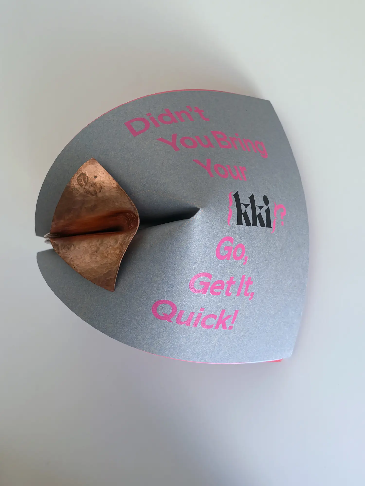
금속 공예가이자 보깅 댄서인 유고와 나눈 가벼운 수다를 책으로 디자인했습니다. 금속 공예와 보깅이라는 두 수행 사이에서 반복과 숙련의 유사성을 발견했습니다. 그 내용에 기반해, 공통된 행위로써 손목의 꺾임과 팔의 궤적을 형상화한 입체 책을 고안했습니다.
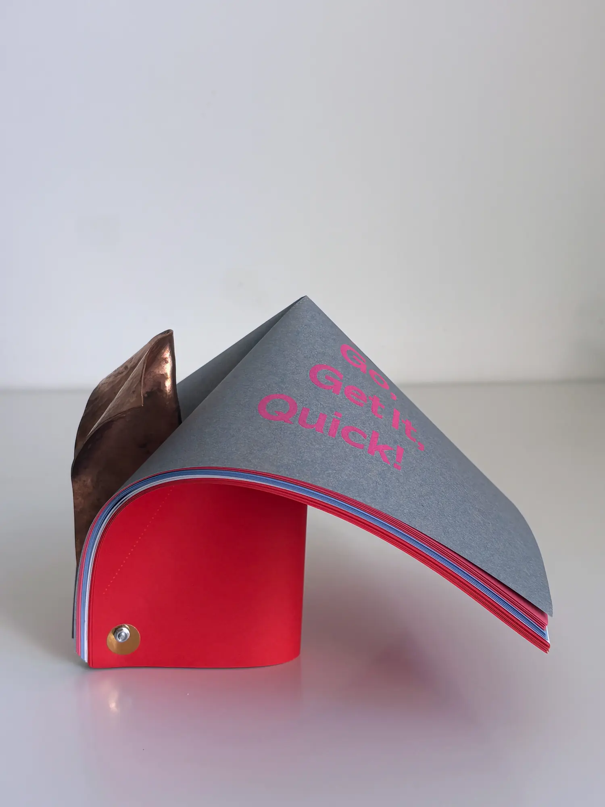
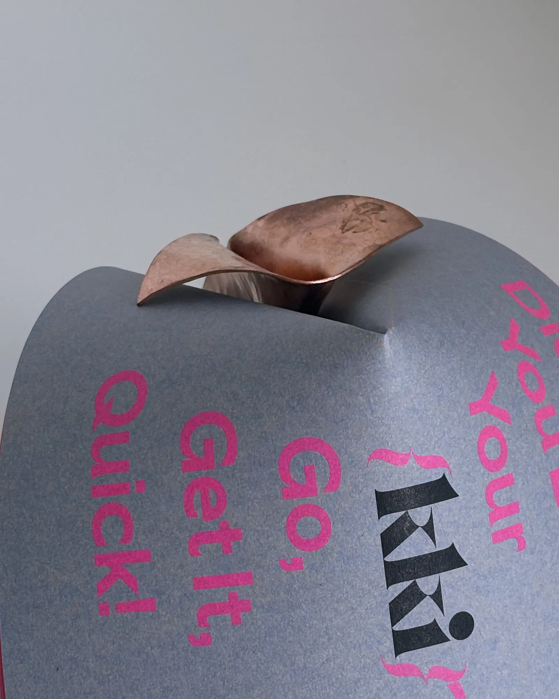
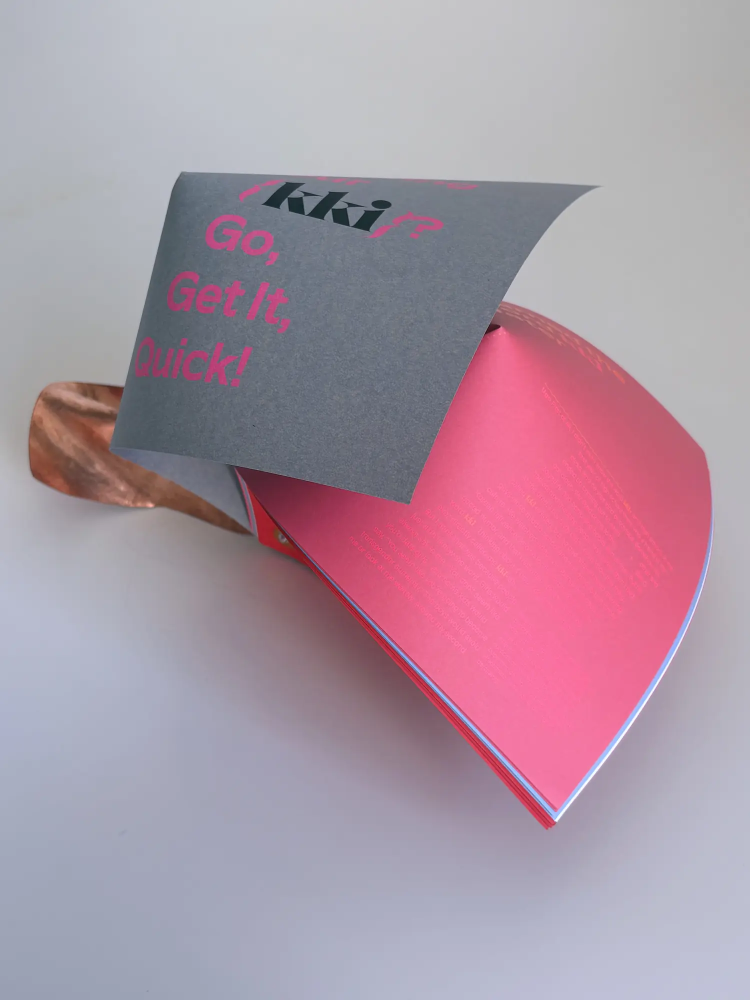
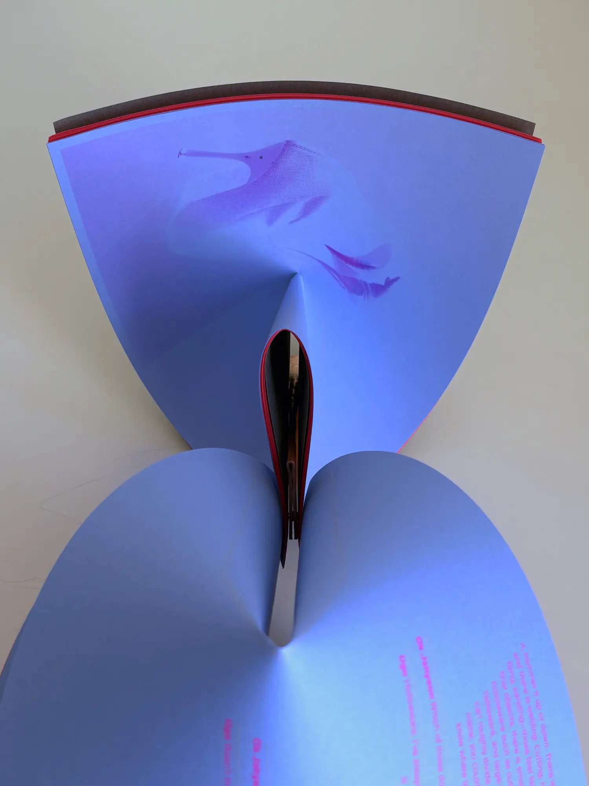
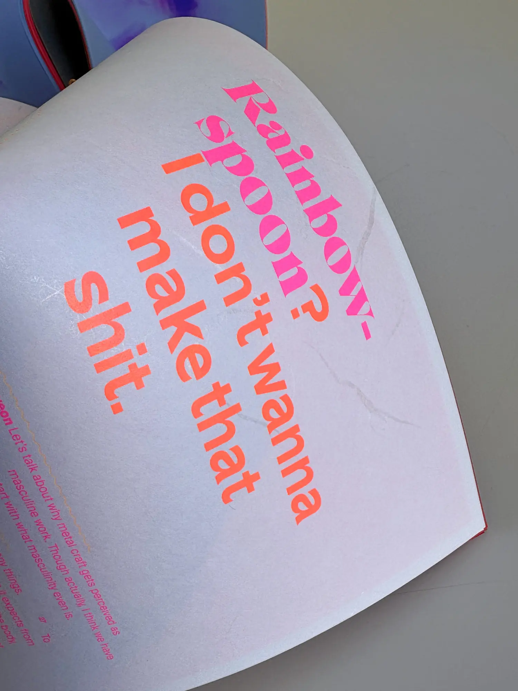
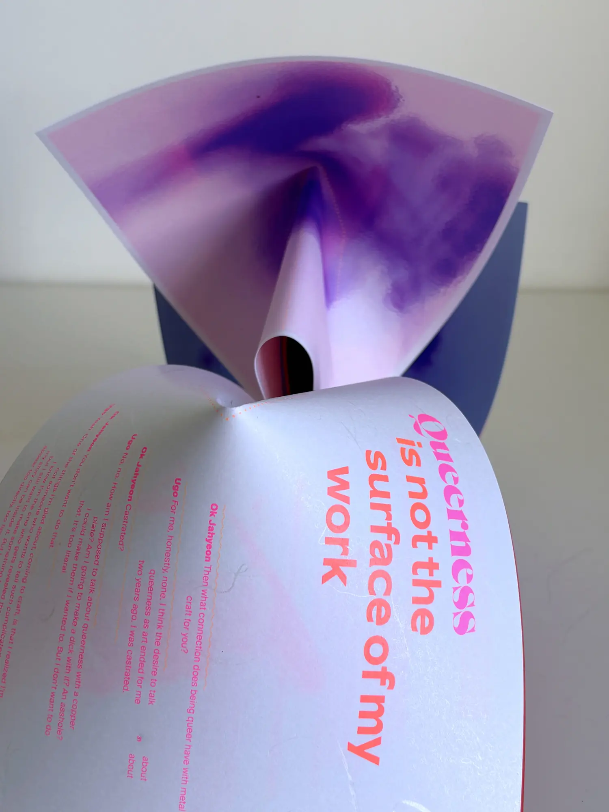
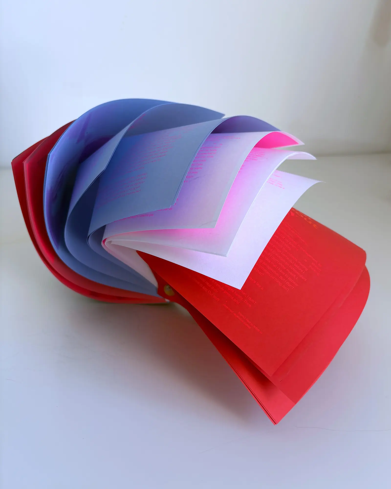
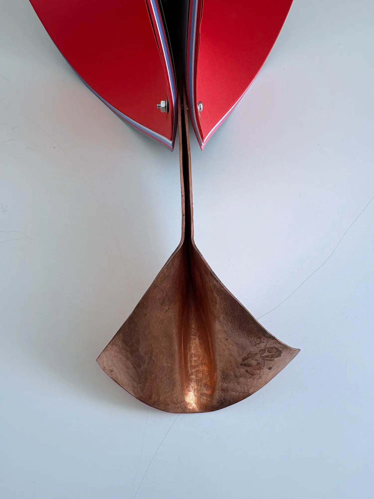
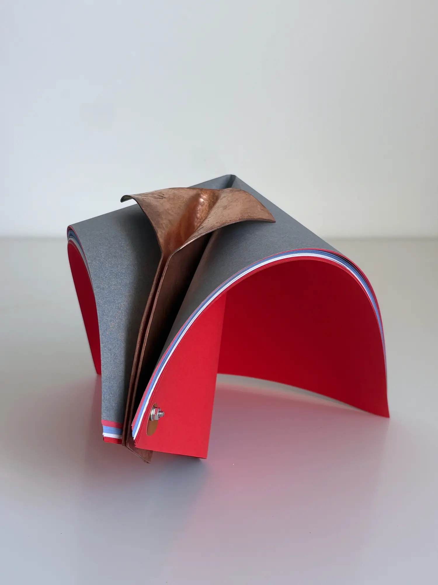
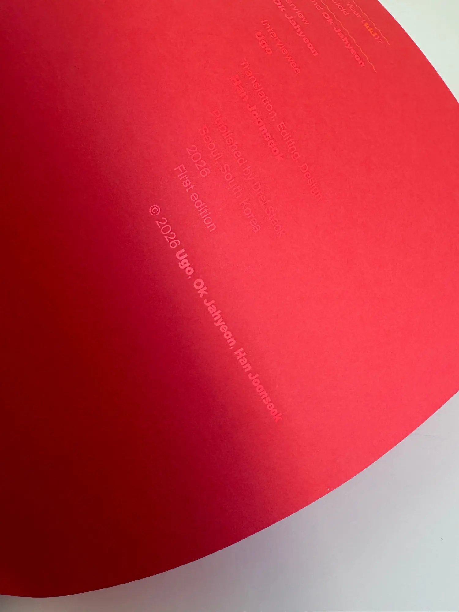